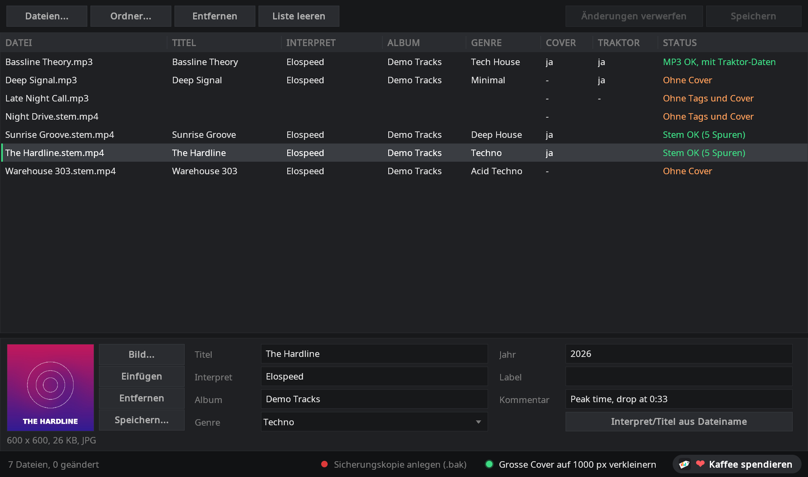
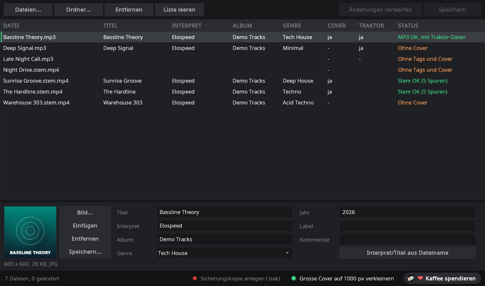

Tags und Cover für deine
Traktor-Stems und MP3s
Setzt Titel, Interpret, Album, Genre und Cover in .stem.mp4- und MP3-Dateien, für einen ganzen Ordner auf einmal. Die Stems, das Audio und Traktors Cue-Punkte bleiben unverändert.
- Kostenlos & MIT-Lizenz
- Windows 10 / 11
- Portabel, ohne Installation
- Stem-Dateien und MP3
- Cue-Punkte bleiben erhalten
- 9 Sprachen

Was der StemTagger kann
Stems bleiben unverändert
Nur die Tags ändern sich, Audio und Stem-Daten bleiben Byte für Byte gleich.
MP3 mit Traktor-Daten
Cue-Punkte, Loops, Beatgrid und Analyse bleiben erhalten.
Viele Dateien auf einmal
Ordner samt Unterordnern, Album, Genre oder Cover für alle markierten Tracks setzen.
Cover ganz einfach
Bild reinziehen, mit Ctrl+V einfügen oder Datei wählen.
Lücken auf einen Blick
Die Statusspalte zeigt „Ohne Tags“ oder „Ohne Cover“; sortieren und die Lücken stehen oben.
Kleine Helfer
Genre-Liste, Interpret und Titel aus dem Dateinamen, Sicherungskopie auf Wunsch, neun Sprachen, hell oder dunkel, Hilfe auf F1.
MP3s, und Traktors Cue-Punkte bleiben
- Nur geänderte Felder werden ersetzt, Traktors Cue-Punkte, Loops und Beatgrid bleiben
- Spalte Traktor zeigt, welche MP3s Traktor schon analysiert hat
- Getestet in Traktor Pro 4

So geht's
- EntpackenPortable ZIP,
StemTagger.exestarten. - Tracks reinziehenStem-Dateien, MP3s oder ganze Ordner, dann die Felder ausfüllen.
- SpeichernCtrl+S schreibt nur die geänderten Dateien.
Gehört zur StemMaker-Familie
Elospeed StemMaker macht aus MP3s Traktor-Stem-Dateien und hat den StemTagger als AddOn dabei.
Fragen und Antworten
Ist der StemTagger wirklich kostenlos?
Ja. Der StemTagger ist Open Source unter der MIT-Lizenz. Keine Werbung, kein Konto und keine Bezahlversion. Wenn er dir gefällt, kannst du auf Ko-fi freiwillig etwas spenden.
Warum nicht mein gewohnter Tag-Editor?
Für normale MP3s geht das oft gut. Stem-Dateien sind aber besonders: Neben dem Master enthalten sie vier Stem-Spuren und einen Block mit Namen und Farben der Stems. Manche Tag-Editoren schreiben beim Speichern die ganze Datei neu und lassen diesen Block weg, und Traktor lädt die Datei danach als normalen Track. Manche werfen auch Traktors eigene Daten in MP3s weg (Cue-Punkte, Loops, Beatgrid). Der StemTagger ändert nur die Tag-Einträge und prüft die neue Datei, bevor sie das Original ersetzt.
Welche Dateien kann er bearbeiten?
Traktor-Stem-Dateien (.stem.mp4) und MP3-Dateien. Felder: Titel, Interpret, Album, Genre, Jahr, Label, Kommentar und Cover. Album-Interpret, Track-Nr., BPM und Tonart bleiben so, wie sie in der Datei stehen.
Und BPM und Tonart?
Die ermitteln Traktor und Mixxx beim Analysieren selbst. Werte, die schon in der Datei stehen, bleiben erhalten.
Welche DJ-Software zeigt die Tags an?
Von uns getestet mit Traktor Pro 4 und Mixxx 2.6 Beta: Titel, Interpret, Album, Genre und Cover werden angezeigt, und die Stem-Dateien laden weiterhin als Stems. Programme, die eine Datei schon kennen, müssen ihre Tags eventuell neu einlesen.
Windows zeigt „Der Computer wurde durch Windows geschützt“. Ist das schlimm?
Der StemTagger ist nicht digital signiert, weil Signatur-Zertifikate jedes Jahr Geld kosten. Auf „Weitere Informationen“ und dann „Trotzdem ausführen“ klicken. Der ganze Quellcode liegt auf GitHub, und du kannst den Download bei VirusTotal prüfen oder selbst bauen.
In welcher Sprache läuft er?
In neun Sprachen: Deutsch, Englisch, Spanisch und seit Version 1.2 Französisch, Portugiesisch (Brasilien), Italienisch, Japanisch, Niederländisch und Polnisch. Die sechs neuen sind maschinelle Übersetzungen, die noch kein Muttersprachler gegengelesen hat, Verbesserungen sind sehr willkommen. Allein gestartet richtet sich der StemTagger nach der Sprache von Windows, sonst Englisch. Als AddOn von StemMaker nimmt er die Sprache, die du in StemMaker gewählt hast.
Wo kann ich Fragen stellen oder Ideen vorschlagen?
In den GitHub Discussions von StemMaker. Dort kannst du auch Screenshots und Dateien anhängen. Lesen geht ohne Konto, zum Schreiben braucht es ein kostenloses GitHub-Konto.
Bereit, deine Sammlung aufzuräumen?
ZIP herunterladen, entpacken und den ersten Ordner hineinziehen.
Der StemTagger ist ein Ein-Personen-Hobbyprojekt und bleibt kostenlos. Wenn er dir Zeit spart, kannst du mir auf Ko-fi einen Kaffee spendieren ☕ oder einfach auf GitHub einen Stern geben. Beides ist ganz freiwillig.